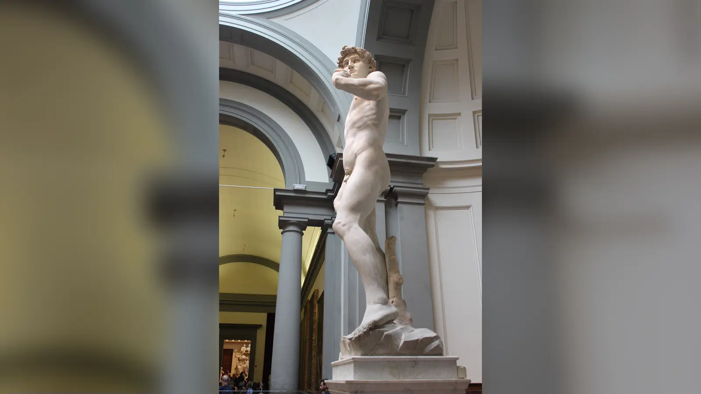

Karşınızda beş metreyi aşan çıplak bir beden duruyor. Ağırlığını sağ bacağına vermiş, sol bacağını gevşetmiş; ilk bakışta neredeyse sakin. Birkaç saniye daha bakınca bu sakinlik çözülmeye başlıyor. Sağ el normalden iri görünüyor; el sırtındaki damarlar kabarmış, parmaklar avuç içindeki taşı gizliyor. Baş da gövdeye göre güçlü ve büyük. Kaşların arası sıkılmış, boyunda damar ve kas gerilimi belirgin, gözler henüz göremediğimiz bir rakibe çevrilmiş. Sol omuzdan arkaya doğru geçen sapan ise o kadar geri planda tutulmuş ki heykelin ne yapmaya hazırlandığını bilmeyen biri onu ilk bakışta fark etmeyebilir.
Bu ayrıntılar Michelangelo’nun Davut’u karşısındaki temel soruyu doğuruyor: İnsan bedenini olağanüstü ayrıntıyla inceleyen, anatomi çalışmaları yaptığı bilinen bir sanatçı sağ elin, başın ve bazı üst beden oranlarının alışılmış idealden saptığını nasıl fark etmemiş olabilir? Soruyu “Michelangelo hata yaptı mı?” diye kurmak yanıltıcıdır. Çünkü heykelde anatomik doğruluk ile bütün figürün oransal sistemi aynı şey değildir. Bir elin damarlarını, eklemlerini ve tendonlarını son derece inandırıcı biçimde işleyip o eli bedenin bütününe göre büyütmek mümkündür.
Davut’un oranlarının tek ve belgelenmiş bir açıklaması yoktur. Michelangelo’nun “eli şu nedenle, başı bu nedenle büyüttüm” dediği güvenilir bir metin elimizde bulunmuyor. Buna karşılık heykelin başlangıçta Floransa Katedrali’nin yüksek dış payandalarından biri için tasarlandığını biliyoruz; aşağıdan ve uzaktan görülme koşulları baş ile üst bedenin vurgulanmasını açıklayabilecek güçlü bir etkendir. Fakat mesele burada bitmez. Michelangelo kendisinden önce iki heykeltıraşın çalıştığı, daraltılmış ve problemli bir mermer bloğu devralmıştı. Eser tamamlanırken yerleştirme kararı da değişti. Büyük el ve baş aynı zamanda eylem, dikkat ve psikolojik gerilimi yoğunlaştıran görsel araçlar olarak okunabilir. Davut’un “orantısızlığı” bu nedenle bir kusur listesi değil, heykelin nasıl tasarlandığını anlamaya açılan kapıdır.
Davut Heykeli Kimi Temsil Ediyor?
Michelangelo’nun figürü, Eski Ahit’te 1 Samuel 17’de anlatılan Davut ile Golyat karşılaşmasının genç kahramanıdır. Filistî savaşçı Golyat İsraillilere meydan okurken genç Davut ağır zırhı reddeder; sapanı ve taşlarıyla karşısına çıkar, Golyat’ı bir taşla yere düşürür ve ardından onun kılıcıyla başını keser. Michelangelo’nun yeniliğini anlamak için hikâyenin sonundan çok seçtiği ana bakmak gerekir: Golyat ortada yoktur, kesilmiş bir baş yoktur, zafer kutlanmıyordur. Davut henüz saldırmamıştır.
Floransa’nın önceki Davut imgeleri farklı bir görsel gelenek sunuyordu. Donatello’nun bronz Davut’u genç kahramanı Golyat’ın kesilmiş başının üzerinde zaferden sonra gösterir. Verrocchio’nun Davut’unda da mağlup düşmanın başı kompozisyonun parçasıdır. Bu eserlerde “kim kazandı?” sorusunun cevabı gözümüzün önündedir. Michelangelo ise sonucu kaldırıp karardan hemen önceki gerilimi öne çıkarır. Sağ eldeki taş ve sol omuzdan geçen sapan, hikâyeyi bilen izleyici için yeterlidir; Golyat’ın bedeni gösterilmeden rakibin varlığı hissedilir.
Bu tercih heykelin psikolojisini değiştirir. Davut yalnızca galibiyetin sembolü değildir; henüz gerçekleşmemiş bir eylemin sorumluluğunu taşıyan genç adamdır. Başın güçlü biçimde yönelmesi, kaşların gerilmesi ve bedenin sakin contrapposto düzeni arasındaki karşıtlık tam da bu nedenle önemlidir. Fiziksel beden beklerken zihin çalışıyor gibidir. Bu durum Davut’un zekâ, hesaplama ve iradeyle ilişkilendirilmesine açık bir kompozisyon yaratır; ancak Michelangelo’nun bunu kendi sözleriyle açıkladığı bir belge bulunmadığını unutmamak gerekir.
Terk Edilmiş Mermer Bloğun Hikâyesi
Davut’un maddi hikâyesi Michelangelo’dan yaklaşık kırk yıl önce başlar. Floransa Katedrali’nin yapımından sorumlu Opera di Santa Maria del Fiore, katedralin dışındaki yüksek payandaları büyük figürlerle donatmayı planlıyordu. 1464’te Agostino di Duccio, bu program için dev bir mermer blok üzerinde çalışmaya başladı. Bilimsel köken araştırmaları mermerin Carrara’dan, daha özel olarak Fantiscritti-Miseglia bölgesinden geldiğini destekler. Agostino projeyi tamamlamadı. Yaklaşık on yıl sonra Antonio Rossellino işi devraldı, fakat onun girişimi de kısa sürdü.
Floransalıların daha sonra “il Gigante”, yani “Dev” diye andığı blok Opera’nın alanında yıllarca bekledi. Michelangelo 16 Ağustos 1501’de görevi aldığında karşısında kusursuz, kendi ihtiyaçlarına göre yeni kesilmiş bir mermer yoktu. Önceki girişimler taşı çoktan biçimlendirmiş ve seçeneklerini daraltmıştı. Galleria dell’Accademia’nın resmî kaydı da Michelangelo’nun Agostino di Duccio ve Antonio Rossellino tarafından daha önce yontulmuş blok üzerinde çalıştığını özellikle vurgular.
Michelangelo işe başladığında 26 yaşındaydı; fakat Roma’daki Pietà ile çoktan ün kazanmıştı. Yaklaşık üç yıl içinde bu taşın içinden, Kaynaklarda asıl figür yüksekliği yaklaşık 410 santimetre, oyulmuş kaidesiyle toplam ölçüsü ise 517 santimetre olarak verilen ve resmî müze verisine göre yaklaşık 5.560 kilogram ağırlığında bir figür çıkardı. Önceden işlenmiş mermer özellikle figürün önden arkaya görece sınırlı derinliği ve bazı poz kararları açısından önemlidir. Buna rağmen her oran farklılığını doğrudan “mermer mecbur bıraktı” diye açıklamak kanıtın ötesine geçer. Taş fiziksel sınırlar koymuş olabilir; Michelangelo’nun bu sınırlar içinde hangi büyütmeleri bilinçli vurgu olarak seçtiğini ise doğrudan anlatan bir metin yoktur.
Michelangelo’ya atfedilen “heykel zaten mermerin içindeydi, ben yalnızca fazlalığı kaldırdım” türü popüler sözler de dikkatle kullanılmalıdır. Mermer içindeki figürü özgürleştirme düşüncesi onun sanat anlayışıyla ilişkilendirilen gerçek bir sanat tarihsel tartışmadır; fakat internette dolaşan her özlü cümleyi sanatçının belgelenmiş sözü saymak doğru değildir. Davut’un teknik başarısı romantik bir efsaneye ihtiyaç duymaz: asıl güçlük, başkalarının müdahale ettiği ve yıllarca beklemiş sınırlı bir taş kütlesinden devasa, dengeli ve psikolojik olarak son derece canlı bir insan bedeni yaratmasıydı.
Michelangelo’nun Davut Heykeli Neden Orantısız Görünüyor?
Davut’a önden ve yakından bakıldığında özellikle baş ile sağ elin bedenin geri kalanına göre büyük algılandığı kolayca fark edilir. Modern morfoloji çalışmaları da heykelde çeşitli oransal sapmalar bulunduğunu kaydeder. Fakat “orantısız” kelimesi burada “anatomiyi yanlış yapmış” anlamına gelmemelidir. Bir insan figürünün tek tek kas, damar, kemik çıkıntısı ve ağırlık dağılımı anatomik olarak ikna edici olabilirken, bu parçaların toplam ölçüleri ideal matematiksel oranlardan sapabilir.
En yaygın açıklama ilk yerleştirme planıdır. Galleria dell’Accademia ve Opera del Duomo kayıtları Davut’un Floransa Katedrali’nin dış payandalarından biri için düşünüldüğünü doğrular. Böyle bir konumda izleyici figüre yer seviyesinden, oldukça aşağıdan ve uzaktan bakacaktı. Baş, yüz ve üst beden perspektif nedeniyle daha küçük algılanmaya ve okunurluğunu kaybetmeye yatkındı. Büyük baş, belirgin yüz hatları ve güçlü el bu görsel kaybı telafi eden büyütmeler olarak açıklanabilir. Mimariye yüksekten yerleştirilecek heykellerde optik düzenlemeler Rönesans sanatına yabancı değildir.
Yine de “Davut aşağıdan kusursuz görünsün diye matematiksel olarak düzeltilmiştir” cümlesini kesin sonuç gibi kullanmak sorunludur. Heykelin oranları için Michelangelo’dan kalmış bir hesaplama veya açıklama yoktur. Üstelik 1504 başında eserin nereye konacağı ciddi biçimde yeniden tartışılmıştır. Yüksek payanda ilk programın gerçek parçasıydı, fakat tamamlanmış eserin sanatsal ve siyasi değeri onu bambaşka bir kamusal mekâna taşıdı.
İkinci etken mermerdir. Michelangelo’nun kullandığı blok kendisi için sıfırdan hazırlanmamıştı; Agostino ve Rossellino’nun müdahaleleri figürün sınırlarını önceden daraltmıştı. Üçüncü etken görsel vurgudur. Büyük sağ el, taşın tutulduğu ve eylemin başlayacağı organdır; büyük baş ve güçlü yüz, savaş öncesi zihinsel yoğunluğu taşır. Bu okumalar anlamlıdır, ancak sanatçının yazılı açıklaması olmadığından “Michelangelo kesinlikle el = irade, baş = zekâ formülünü kullandı” diye sunulmamalıdır.
Dördüncü etken Michelangelo’nun sanat anlayışıdır. Rönesans natüralizmi fotoğrafik ölçü sadakati anlamına gelmez. İdeal beden, klasik heykel mirası, kahramanca ölçek ve psikolojik ifade aynı figürde birleştirilebilir. Michelangelo’nun daha sonraki eserlerinde de beden, anlamı güçlendirmek için uzatılabilir veya yoğunlaştırılabilir. Davut bu yaklaşımın erken ve olağanüstü kontrollü örneklerinden biridir.
Davut Heykelinin Elleri Neden Büyük?
Davut’un sağ eli yalnızca ölçüsüyle değil, ayrıntısıyla da dikkat çeker. El sırtındaki damarlar, eklemlerin sertliği, parmakların uzunluğu ve avuç içindeki taşın gizlenişi, sakin duran bedenin içinde yaklaşan hareketi toplar. Kol gevşekçe aşağı uzanıyor gibi görünse de el tamamen edilgen değildir. Taş hazırdır; sapanın diğer kısmı sol tarafta bedene dolanmıştır. Michelangelo’nun anlatısında zafer henüz gerçekleşmediği için bu el gelecekteki eylemin en yoğun noktalarından birine dönüşür.
Elin büyüklüğünü yalnızca “aşağıdan görülecekti” diye açıklamak yetersiz kalır. Yüksek yerleştirme planı güçlü bir bağlamsal açıklamadır, fakat mermer bloğun önceden işlenmiş olması, figürün önden okunması, elin kalça yanında güçlü bir görsel ağırlık yaratması ve anlatıdaki işlevi birlikte düşünülmelidir. Anatomik araştırmalar da sağ elin bedenin geri kalanına göre belirgin biçimde büyük olduğu gözlemini, elin kendi yapısındaki ayrıntılı doğalcılıkla yan yana getirir. Burada “yanlış çizilmiş” bir elden çok, ölçeği büyütülmüş ama anatomisi dikkatle gözlenmiş bir el vardır.
Sanat tarihindeki sembolik okumalarda “manus”, yani el üzerinden güç, eylem ve irade çağrışımları kurulmuştur. Davut’un “güçlü el” fikriyle ilişkilendirilen geleneksel etimolojik yorumları da vardır. Floransa Cumhuriyeti bağlamında büyük el, kentin kendini savunma ve kararlı eylem kapasitesine açık bir simge olarak okunabilir. Ancak bunlar Michelangelo’nun “eli cumhuriyetin gücü için büyüttüm” diye doğruladığı anlamlar değildir. Tarihsel bağlam ile sanatçının belgelenmiş niyeti birbirinden ayrılmalıdır.
Davut dev Golyat’a kas gücüyle eşit değildir; küçük bir taş ve doğru anda yapılan hareketle kazanacaktır. Bu nedenle devasa el ile gizlediği küçücük taş arasındaki karşıtlık özellikle etkilidir. Heykel 1504’te Palazzo Vecchio önüne yerleştirildiğinde cumhuriyetçi özgürlük ve savunma çağrışımları güçlenmiş, sağ elin eylem kapasitesi de siyasi okumaya daha açık hâle gelmiştir.
Davut Heykelinin Başı Neden Büyük?
Başın büyüklüğü sağ el kadar sık tartışılır. Yüksek bir katedral payandasına konacak dev heykelin yüzünün yerden okunabilmesi için başın ve yüz hatlarının güçlendirilmesi mantıklıdır. Davut’u ilk hedeflenen konumunda, aşağıdan ve uzaktan hayal etmek bugün Accademia’daki müze deneyiminden çok farklıdır. Kaşların, gözlerin ve başın büyütülmesi bu uzak görüşte figürün karakterini koruyabilirdi.
Fakat baş yalnızca optik bir problem çözmez. Michelangelo’nun seçtiği anlatı anında Davut’un en önemli eylemi henüz fiziksel değildir. Rakibini değerlendirir, bekler ve saldırı anını hesaplar. Bu nedenle başın gövde üzerindeki güçlü varlığı, sanat tarihsel yorumlarda zihinsel yoğunluk, dikkat ve kararlılıkla ilişkilendirilmiştir. Galleria dell’Accademia’nın yorumunda da büyük baş konsantrasyonla, büyük el ise düşünülmüş eylemle ilişkilendirilen bir vurgu olarak ele alınır.
Bu açıklamanın sınırı önemlidir. “Baş büyük çünkü zekâyı temsil ediyor” ifadesi belgelenmiş bir ikonografik program gibi kurulamaz. Michelangelo’nun böyle bir cümlesi yoktur. Daha güvenli sonuç şudur: başın büyütülmesi ilk mimari konumun optik ihtiyaçlarıyla uyumludur ve aynı zamanda heykelin psikolojik anlatısını kuvvetlendirir. İki işlev birbirini dışlamak zorunda değildir.
Heykel Gerçekten Yükseğe Mi Yerleştirilecekti?
Evet. Bu, internet efsanesi değil, kurumsal belgelerle doğrulanan sipariş tarihinin parçasıdır. Galleria dell’Accademia, heykelin Floransa Katedrali’nin dış payandalarından birine yerleştirilmesinin planlandığını açıkça kaydeder. Opera di Santa Maria del Fiore arşivleri de katedral çevresindeki dev figür programını ve Davut’un bu bağlamdan doğduğunu gösterir. Michelangelo’ya verilen blok zaten bu eski programın maddi kalıntısıydı.
Fakat heykel 1504’e yaklaşırken sorun değişti. Davut artık yalnızca yüksekten görülecek katedral dekorasyonunun bir parçası değil, olağanüstü bir kamusal eser olarak algılanıyordu. 25 Ocak 1504’te dönemin önde gelen sanatçılarının katıldığı bir kurul heykelin yerini tartıştı. Leonardo da Vinci, Sandro Botticelli, Filippino Lippi, Perugino, Piero di Cosimo ve Sangallo ailesinden sanatçılar gibi isimlerin görüş bildirdiği bu toplantı, yerleştirme kararının otomatik olmadığını gösterir. Leonardo’nun Loggia dei Lanzi yönündeki görüşü gibi farklı öneriler de tartışılmıştır.
Sonunda heykel Piazza della Signoria’da Palazzo Vecchio girişine yerleştirildi. Burada daha önce Donatello’nun Judith ve Holofernes grubu bulunuyordu; Judith başka bir konuma taşındı. Davut 8 Eylül 1504’te kent halkına sunulduğunda başlangıçtaki katedral bağlamından belirgin biçimde farklı bir kamusal ve siyasi simgeydi.
Bu kronoloji oranlar konusundaki kesin hükmü neden zorlaştırdığını gösterir. Michelangelo işe yüksek payanda için hazırlanmış bir blok ve siparişle başladı. Dolayısıyla aşağıdan görülme koşullarını hesaba katmış olması son derece makuldür. Fakat eserin yapım süreci tamamlanırken nihai konum değişti ve oranların bütününü yalnızca tek bir optik formülle açıklayan sanatçı belgesi yoktur. “Yüksek yerleştirme” gerçektir; “her oransal sapmanın tek nedeni budur” sonucu ise yorumdur.
Dev Heykel Floransa İçin Ne Anlama Geliyordu?
Davut Floransa’da Michelangelo’dan önce de güçlü bir sivil simgeydi. Küçük görünen ama daha büyük bir düşmanı zekâ, inanç ve cesaretle yenen genç kahraman, kendisini güçlü rakiplerle çevrili gören Floransa için uygun bir siyasal metafor sunuyordu. Michelangelo’nun heykelinin Palazzo Vecchio önüne taşınması bu anlamı yoğunlaştırdı. Galleria dell’Accademia eserin burada Floransalıların gücü ve bağımsızlığının simgesine dönüştüğünü açıkça belirtir.
Bu siyasi anlamı 1504 Floransa’sının cumhuriyetçi atmosferinden ayırmak mümkün değildir. Medici ailesi 1494’te kentten sürülmüş, cumhuriyet yönetimi yeniden kurulmuştu. Palazzo della Signoria devletin yönetim merkeziydi. Dev bir Davut’un girişte durması, kutsal bir Eski Ahit kahramanını kamusal savunma ve bağımsızlık diliyle birleştiriyordu. Bununla birlikte her ayrıntıyı belirli bir Medici karşıtı şifreye çevirmek doğru değildir. Heykelin siyasi anlamı konum ve tarihsel bağlamla güçlü biçimde desteklenirken, tek tek beden parçalarının belirli siyasi kişilere gönderme yaptığına dair aynı düzeyde belge yoktur.
Golyat’ın görünmemesi burada özellikle verimli bir görsel etki yaratır. Donatello ve Verrocchio’da düşman mağlup edilmiştir ve başı Davut’un ayaklarındadır. Michelangelo’da düşman heykelin dışında kalır. Davut’un bakışı gerçek mekâna doğru yöneldiği için izleyicinin bulunduğu dünya görünmeyen tehdidin alanına dönüşür. Bunun belirli bir siyasi düşmanı birebir “Golyat” ilan eden gizli bir kod olduğunu söylemek doğru olmaz; fakat Piazza della Signoria’daki konumunda savunma, uyanıklık ve cumhuriyetçi özgürlük çağrışımlarına açık olduğu açıktır.
Davut’un Yüzündeki Gerilim ve Görünmeyen Golyat
Davut’un bedenini yalnızca çıplak bir atlet gibi okumak heykelin en ince başarısını kaçırır. Ağırlık sağ bacağa binerken sol bacak serbestleşir; kalça ve omuz eksenleri birbirine karşıt yönlerde hafifçe döner. Bu contrapposto, Antik Yunan ve Roma heykelinden Rönesans’a aktarılan temel beden düzenlerinden biridir. Fakat Michelangelo klasik dengeyi tam bir rahatlamaya dönüştürmez. Gövde sakin görünürken yüz ve eller başka bir zaman duygusu taşır.
Kaşlar çatılmıştır. Gözler rakibi ölçer gibi yoğunlaşır. Boyun kasları ve damarları belirginleşir. Dudaklar gevşek bir tebessüm taşımaz. Sağ el taşla hazırdır; sol el omuzdan arkaya geçen sapanı kontrol eder. Sapanın büyük ölçüde gizlenmesi özellikle önemlidir: izleyici ilk anda anıtsal çıplak bedeni görür, silahı ise daha sonra fark eder. Böylece Davut’un gücü büyük bir kılıç veya zırhla değil, küçük bir taşın doğru kullanımına bağlıdır.
Bu düzen kahramanlığı kaba kas gücünden ayırır. Davut’un bedeni devasa ölçekte sunulsa da İncil anlatısındaki avantajı Golyat’tan daha güçlü olması değildir. Avantajı farklı bir silah, doğru mesafe ve doğru andır. Michelangelo’nun heykelinde taşın küçüklüğü ve sapanın neredeyse görünmezliği, fiziksel büyüklük ile stratejik zekâyı aynı figürde gerilim hâlinde tutar.
Davut Heykeli Neden Çıplak?
Davut’un çıplaklığı İncil anlatısının gerçekçi kostüm rekonstrüksiyonu değildir. Michelangelo burada Rönesans’ın Antik Yunan ve Roma heykeline duyduğu yoğun ilgiyi Hristiyan bir kahramanın bedeninde yeniden kurar. “Kahramanca çıplaklık” diye açıklanan klasik görsel dil, bireyi gündelik kıyafetten ve belirli bir zamana ait ayrıntılardan uzaklaştırarak ideal, zamansız ve anıtsal bir bedene dönüştürebilir. Michelangelo’nun antik heykellerle karşılaşması ve erkek çıplağı üzerindeki çalışmaları bu dilin gelişiminde önemliydi.
Bununla birlikte Davut pürüzsüz, soyut bir geometri değildir. Damarlar, diz kapağı, ayaklar, karın bölgesi, boyun ve el yüzeyi yaşayan bir beden gözlemini korur. Kaslar saldırı anındaki gibi sonuna kadar kasılmış değildir; çünkü figür henüz hareketi başlatmamıştır. Bedendeki potansiyel güç ile yüzün zihinsel gerilimi birbirini tamamlar. Çıplaklık bu nedenle hem klasik ideal beden geleneğine bağlanır hem de Davut’un zırhsız oluşunu Golyat’ın ağır savaş donanımıyla karşılaştırmaya elverişli kılar.
Rönesans hümanizmi açısından insan bedeni, ilahi yaratılışın ve insan yetisinin incelenebileceği değerli bir formdu. Ancak Davut’u “Hristiyanlıktan kopmuş pagan bir beden” diye okumak da aşırı basitleştirmedir. Kutsal konu, klasik biçim ve Floransa’nın sivil dünyası aynı heykelde birleşir. Michelangelo’nun insan bedenini anlam ve psikoloji taşıyan bir araç olarak nasıl kullandığını görmek için Âdem’in Yaratılışı üzerine incelememiz de anlamlı bir karşılaştırma sunar.
Davut Heykeli Neden Sünnetsiz Görünüyor?
Davut’un Yahudi bir figür olması nedeniyle en sık sorulan ayrıntılardan biri sünnet meselesidir. Kitabı Mukaddes geleneği içinde Davut’un sünnetli olması beklenirken Michelangelo’nun figürü sünnetin anatomik sonucunu belirgin biçimde göstermez. Bunu sanatçının Davut’un kimliğini bilmemesine veya anatomi konusundaki bilgisizliğine bağlamak ikna edici değildir. Rönesans sanatında Yahudi ve Hristiyan kutsal figürlerin çıplak tasvirleri modern tarihsel veya tıbbi rekonstrüksiyon mantığıyla yapılmıyordu.
Tıp tarihi literatüründe Michelangelo’nun Davut’u tartışılırken, Rönesans sanatında sünnetin etkisinin çoğunlukla gösterilmemesinin geleneksel olduğu; İsa’nın çocukluk tasvirlerinin de buna örnek oluşturduğu belirtilmiştir. Davut’un görünümü bu nedenle Michelangelo’ya özgü bir “hata” olmaktan çok dönemin görsel konvansiyonları ve klasik ideal erkek bedeniyle ilişkilidir.
Burada modern tıbbi tanı üretmek de gereksizdir. Heykel tarihsel bir kişinin klinik belgesi değil, 16. yüzyıl başında klasik sanat mirası içinde yeniden düşünülmüş kutsal ve sivil bir kahramandır. Sünnet ayrıntısının gösterilmemesi, heykelin Yahudi Davut’u temsil etmediği anlamına gelmez; sipariş ve erken kaynaklar figürün kimliğini açıkça Davut olarak verir.
Michelangelo’nun Anatomi Bilgisi
Michelangelo’nun anatomi bilgisini efsaneden ayırmak önemlidir. Vasari ve Ascanio Condivi gibi erken biyografik kaynaklar genç sanatçının Floransa’daki Santo Spirito çevresinde insan bedenleri üzerinde anatomi çalışabildiğini aktarır. Modern tıp tarihi araştırmaları da Michelangelo’nun kadavra diseksiyonları yaptığını ve beden yapısını sanat pratiğinin parçası olarak incelediğini kabul eder. Buna karşılık internette dolaşan kesin sayılar, dramatik gizli diseksiyon hikâyeleri veya her çalışmanın belirli bir hastaneye bağlanması aynı ölçüde sağlam değildir.
Özellikle “Santa Maria Nuova’da şu kadar ceset üzerinde çalıştı” gibi iddialar kaynak derecesi belirtilmeden tekrarlanmamalıdır. Michelangelo’nun anatomiyle yoğun ilişkisi güçlü tarihsel temele sahiptir; fakat Santo Spirito, hastane çevreleri ve daha sonraki Roma dönemi çalışmalarının ayrıntıları farklı kaynak katmanlarından gelir. Erken biyografiler de Michelangelo’nun ölümünden yıllar sonra yazılmış, sanatçının ününü biçimlendiren metinlerdir; bu nedenle değerli oldukları kadar eleştirel okunmaları gerekir.
Davut’un sağ eline yakından bakıldığında bu bilgi soyut bir biyografi ayrıntısı olmaktan çıkar. Damarların yüzeye yaklaşması, eklemler, tendonların gerilimi, diz ve ayak yapısı, ağırlığın taşıyıcı bacağa aktarılması Michelangelo’nun beden mekaniğine dikkatini gösterir. Bu nedenle “eli yanlış ölçmüş” açıklaması zayıftır. Anatomik doğruluk, parçanın kendi yapısının doğru anlaşılmasıdır; sanatsal oran ise parçaların bütün içindeki büyüklüğüdür. Michelangelo bir eli anatomik olarak son derece inandırıcı, fakat bedene göre büyük yapabilir.
2019’da Italian Journal of Anatomy and Embryology’de yayımlanan morfolojik çalışma da heykelin olağanüstü genel uyumu içinde çeşitli varyasyon ve oransal sapmalar bulunduğunu vurgular. Bu tür tıbbi incelemeler sanatçının niyetini tek başına açıklayamaz; fakat “iyi anatomi bilgisi varsa bütün ölçüler standart olmak zorundadır” varsayımının yanlışlığını gösterir. Davut’un oran tartışması tam da doğru anatomi ile ifade amacıyla dönüştürülmüş oran arasındaki farkta anlam kazanır.
Davut Heykeli Bugün Nerede?
Orijinal Davut bugün Floransa’daki Galleria dell’Accademia di Firenze’dedir. Heykel 1504’ten 19. yüzyıla kadar Palazzo Vecchio önünde açık havada kaldı. Yağmur, sıcaklık değişimleri ve yüzey aşınması gibi uzun süreli riskler nedeniyle 1873’te koruma amacıyla meydandan taşındı. Müzedeki özel Tribuna, Emilio De Fabris’in tasarımıyla Davut’u barındıracak şekilde düzenlendi ve heykel bugün kontrollü ortamda korunuyor.
Piazza della Signoria’da bugün görülen beyaz Davut orijinal değildir. Özgün eser Accademia’ya taşındıktan sonra eski konumu bir süre boş kaldı; 1910’da mermer kopya Palazzo Vecchio girişindeki yerine yerleştirildi. Floransa’daki Piazzale Michelangelo’da ayrıca bronz bir Davut kopyası bulunur. Bu çoğaltmalar heykelin kent kimliğindeki yerini sürdürürken özgün mermer müze ortamında korunmaktadır.
Heykelin zarar tarihi taşınma kararının neden önemli olduğunu gösterir. 1527’de Floransa’daki siyasi çatışmalar sırasında Palazzo Vecchio’dan atılan ağır nesneler Davut’un sol koluna zarar verdi; kırılan parçaların toplanıp daha sonra yeniden birleştirilmesi eserin erken restorasyon tarihinin parçasıdır. 1991’de ise bir saldırgan heykelin sol ayağına çekiçle vurup ayak parmaklarından birine zarar verdi. Müze içinde bulunmak riski tamamen ortadan kaldırmamış olsa da kontrollü koruma, açık havada dört yüzyıla yakın kalmış mermer için hayati önem taşır.
2003–2004’te Davut kapsamlı bir temizlik ve konservasyon sürecinden geçti. Galleria dell’Accademia yüzeyin düzenli olarak temizlenip izlendiğini belirtir. Beş metreyi aşan tek blok mermer figürün yapısal durumu, çatlakları, yüzey birikimleri ve taşıyıcı bölgeleri bilimsel incelemelerin konusu olmaya devam etmektedir.
Büyük Eller ve Başın Sırrı İçin Dengeli Sonuç
Michelangelo’nun Davut heykelinin elleri ve başı neden büyük? Bugünkü kanıtlar tek nedenli bir cevap vermeye izin vermiyor. İlk ve en güçlü bağlamsal etken, heykelin başlangıçta Floransa Katedrali’nin yüksek bir dış payandası için düşünülmüş olmasıdır. Aşağıdan ve uzaktan görülme koşulları başın, yüzün ve üst bedenin vurgulanmasını mantıklı kılar. Bu açıklama gerçek bir tarihsel yerleştirme planına dayanır; fakat Michelangelo’nun oranları hangi hesapla değiştirdiğini gösteren bir not elimizde yoktur.
İkinci etken mermer bloğun Michelangelo’ya gelmeden önce Agostino di Duccio ve Antonio Rossellino tarafından işlenmiş olmasıdır. Daraltılmış ve kusurları bulunan bir taş heykeltıraşın biçim seçeneklerini sınırlamış olabilir. Özellikle figürün önden arkaya derinliği bu malzeme geçmişiyle birlikte düşünülür. Yine de büyük el veya başı doğrudan tek bir kesik ya da kusura bağlayan kesin belge yoktur.
Üçüncü etken görsel ve sembolik vurgudur. Sağ el yaklaşan eylemin aracıdır; baş, Davut’un Golyat’a saldırmadan önceki yoğun dikkatini taşır. “Güçlü el”, cumhuriyetçi savunma, zekâ ve irade gibi okumalar sanat tarihsel açıdan verimlidir, ancak bunların hepsi aynı kanıt düzeyinde değildir. Bazıları dönemin metinsel ve siyasi bağlamıyla güçlü biçimde desteklenirken bazıları Michelangelo’nun doğrulamadığı yorumlardır.
Dördüncü etken Michelangelo’nun natüralist anatomiyi ifade uğruna dönüştürme özgürlüğüdür. Davut’un eli büyük olabilir ve yine de anatomik olarak olağanüstü gözlemlenmiş olabilir. Baş standart oranı aşabilir ve yine de figürün bütün psikolojik ağırlığını taşıyabilir. Heykelin gücü “Michelangelo hata yapmadı” sloganından daha ilginç bir yerde durur: doğaya sadık gözlem ile anlam yaratmak için doğayı değiştirme cesareti arasındaki gerilimde.
Bu nedenle Davut’un oranlarına yakından baktığımızda kusursuz bir matematik şeması değil, belirli bir taşın, başlangıçtaki mimari planın, Rönesans beden idealinin ve 1504 Floransa’sının siyasi dünyasının kesiştiği bir heykel görürüz. Büyük el ve başın sırrı tek bir numarada çözülemez. Davut’u hâlâ güçlü kılan şeylerden biri, anatomik doğruluk ile sanatsal anlam arasındaki sınırı beş yüzyıl sonra bile tartışmaya zorlamasıdır. Sanat tarihinde küçük bir ayrıntının bütün okuma biçimini nasıl değiştirebildiğine dair benzer örnekler için Leonardo’nun Son Akşam Yemeği’nde Yahuda’yı nasıl ayırdığına ve Mona Lisa’nın neden bu kadar ünlü olduğuna ilişkin incelemelerimize geçilebilir.
Sık Sorulan Sorular
Davut heykelinin elleri neden büyük?
Özellikle sağ el bedenin genel oranına göre belirgin biçimde büyüktür. Bunun tek ve Michelangelo tarafından açıklanmış bir nedeni yoktur. Heykel başlangıçta Floransa Katedrali’nin yüksek dış payandalarından biri için düşünüldüğünden, aşağıdan ve uzaktan okunacak önemli bölümlerin büyütülmüş olması güçlü bir olasılıktır. Ancak önceden işlenmiş mermer bloğun sınırlamaları, kompozisyon dengesi ve sağ elin taşı tutarak yaklaşan eylemi temsil etmesi de değerlendirilir. “Büyük el kesinlikle cumhuriyetin gücünü simgeliyor” ifadesi ise yorumdur, belgelenmiş sanatçı açıklaması değildir.
Davut heykelinin başı neden büyük?
Başın büyüklüğü çoğunlukla ilk yerleştirme planıyla ilişkilendirilir. Yüksekteki bir payandaya konacak heykelin başı aşağıdaki izleyiciye daha küçük algılanabileceğinden büyütme optik telafi işlevi görebilirdi. Bunun yanında çatılmış kaşlar, yoğun bakış ve güçlü yüz yapısı Davut’un savaş öncesi konsantrasyonunu öne çıkarır. Bazı sanat tarihsel yorumlar büyük başı zekâ ve dikkatle ilişkilendirir. Fakat Michelangelo’nun “başı şu nedenle büyüttüm” dediği bir belge yoktur; optik ve anlatısal açıklamalar birlikte değerlendirilmelidir.
Davut heykeli gerçekten orantısız mı?
Evet, bazı bölümleri klasik veya ortalama insan oranlarına göre belirgin sapmalar gösterir; özellikle baş ve sağ el büyüktür. Fakat “orantısız” kelimesi burada kötü anatomi anlamına gelmez. Michelangelo kas, damar, tendon ve ağırlık dağılımını son derece dikkatli işlemiştir. Modern morfolojik çalışmalar da heykelin genel uyumu içinde çeşitli oransal varyasyonlar bulunduğunu gösterir. Bu sapmaların bir bölümü yüksek yerleştirme planı, malzeme sınırları ve görsel vurgu ile açıklanabilir. Hepsini tek bir nedene bağlayan kesin tarihsel kanıt bulunmamaktadır.
Davut heykelinin boyu kaç metredir?
Galleria dell’Accademia di Firenze’nin resmî eser kaydına göre Davut, oyulmuş kaidesiyle birlikte 517 santimetre, yani 5,17 metre yüksekliğindedir. Müze aynı kayıtta ağırlığını yaklaşık 5.560 kilogram olarak verir. Dev ölçü başlangıçtaki katedral programıyla bağlantılıydı; heykel yüksek bir dış payandada uzaktan görülecek büyük figürlerden biri olarak düşünülmüştü. Sonunda Piazza della Signoria’ya yerleştirilerek kent merkezinde çok daha doğrudan bir kamusal ve siyasi etki yarattı.
Davut heykeli kimi temsil eder?
Heykel, 1 Samuel 17’de Golyat’la karşılaşan genç Davut’u temsil eder. Michelangelo’nun önemli tercihi kahramanı zaferden sonra değil, mücadeleden hemen önce göstermesidir. Donatello ve Verrocchio gibi önceki Floransalı sanatçılar Golyat’ın kesilmiş başını Davut’un yanında gösterirken Michelangelo düşmanı kompozisyon dışına çıkarır. Taş sağ elde, sapan ise sol omuz ve sırt boyunca büyük ölçüde gizlidir. Böylece vurgu zafer kupasından karar anına kayar; Davut’un bakışı ve yüzündeki gerilim görünmeyen Golyat’ın varlığını hissettirir.
Davut heykeli neden çıplaktır?
Çıplaklık Rönesans’ın Antik Yunan ve Roma heykeline dönüşü, ideal erkek bedeni ve kahramanca çıplaklık geleneğiyle ilişkilidir. Michelangelo Davut’u tarihsel olarak yeniden oluşturulmuş giysiler içinde değil, klasik anıtsal heykel dili içinde sunar. Bu seçim figürü belirli bir dönemin kostümünden uzaklaştırıp ideal ve kamusal bir kahramana dönüştürür. Bununla birlikte beden soyut değildir: damarlar, kaslar, eklemler ve ağırlık dağılımı dikkatle gözlemlenmiştir. Çıplaklık klasik idealizasyon ile yaşayan, gerilim altındaki bedeni aynı anda taşır.
Davut heykeli neden sünnetsizdir?
Davut Yahudi bir figür olmasına rağmen heykel sünnetin anatomik sonucunu belirgin biçimde göstermez. Bunun Michelangelo’nun bilgisizliğinden kaynaklandığını gösteren kanıt yoktur. Rönesans sanatında kutsal Yahudi figürlerin anatomisi modern tarihsel veya tıbbi rekonstrüksiyon standardına göre kurulmazdı; klasik erkek çıplağı geleneği de güçlü bir modeldi. Tıp tarihi literatürü benzer görsel konvansiyonların başka kutsal figürlerde de bulunduğunu belirtir. Heykelin belgelerdeki kimliği tartışmasız biçimde Davut’tur; bu anatomik ayrıntı temsil edilen kişinin kimliğini değiştirmez.
Davut heykelinde Golyat neden yoktur?
Michelangelo hikâyenin zaferden sonraki bölümünü değil, çatışmadan hemen önceki anı seçmiştir. Golyat’ın kesilmiş başını göstermek önceki Floransa Davut heykellerinde yaygın bir çözümdü. Michelangelo rakibi görünmez kılar; böylece dikkat sonuçtan çok Davut’un psikolojik hazırlığına yönelir. Çatılmış kaşlar, yoğun bakış, sağ elde saklanan taş ve neredeyse görünmeyen sapan bu bekleyişi kurar. Golyat’ın yokluğu heykel Piazza della Signoria’ya taşındığında siyasi okumaya da açık bir boşluk yaratmış, Davut’u görünmeyen tehditlere karşı savunma simgesi hâline getirmiştir.
Orijinal Davut heykeli nerede?
Orijinal mermer heykel Floransa’daki Galleria dell’Accademia di Firenze’de bulunur. Davut 1504’ten 1873’e kadar Palazzo Vecchio’nun önünde, Piazza della Signoria’da açık havada durdu. Uzun süreli hava koşullarının yarattığı koruma sorunları nedeniyle 1873’te Accademia’ya taşındı. Bugün özgün eser kontrollü iç ortamda korunur ve düzenli konservasyon takibine tabi tutulur. Piazza della Signoria’da görülen heykel ise özgün Michelangelo mermeri değildir.
Piazza della Signoria’daki Davut gerçek mi?
Hayır. Palazzo Vecchio girişinde bugün görülen Davut, Michelangelo’nun 1501–1504 arasında yonttuğu özgün heykel değildir. Orijinal eser 1873’te Galleria dell’Accademia’ya taşındı. Eski konuma 1910’da tam boy mermer bir kopya yerleştirildi. Floransa’daki Piazzale Michelangelo’da ayrıca bronz bir Davut kopyası bulunur. Piazza’daki kopya heykelin 1504’teki siyasi ve mimari bağlamını anlamak açısından değerlidir; Michelangelo’nun özgün mermer yüzeyini görmek için Accademia’daki esere bakmak gerekir.
Michelangelo Davut’u kaç yaşında yaptı?
Michelangelo 6 Mart 1475’te doğdu ve Davut siparişini 16 Ağustos 1501’de aldı; dolayısıyla işe başladığında 26 yaşındaydı. Heykel 1504’te tamamlanıp aynı yıl Piazza della Signoria’ya yerleştirildiğinde sanatçı 29 yaşındaydı. Genç yaşına rağmen Michelangelo acemi değildi: Roma’daki Pietà başta olmak üzere önemli eserlerle çoktan ün kazanmıştı. Davut’un başarısı yine de Floransa’daki konumunu olağanüstü biçimde güçlendirdi ve onu kentteki en önemli kamusal projelerin merkezindeki sanatçılardan biri hâline getirdi.
Heykel hangi mermerden yapılmıştır?
Davut tek bir büyük Carrara mermeri bloğundan yontulmuştur. Galleria dell’Accademia malzemeyi beyaz mermer olarak kaydeder; bilimsel köken araştırması ise mermerin Carrara’daki Fantiscritti-Miseglia ocak bölgesinden geldiğini güçlü biçimde destekler. 2005’te Journal of Archaeological Science’da yayımlanan çalışma spektroskopik, izotopik ve diğer yöntemleri birlikte kullanmıştır. Michelangelo açısından asıl teknik güçlük, bloğun kendisinden onlarca yıl önce Agostino di Duccio ve ardından Antonio Rossellino tarafından kısmen işlenmiş olmasıydı.
Kaynakça
- Galleria dell’Accademia di Firenze, “David — Michelangelo Buonarroti”, resmî eser kaydı: https://www.galleriaaccademiafirenze.it/en/artworks/david-michelangelo/
- Opera di Santa Maria del Fiore, “Quando il David si mosse”, Davut’un katedral programı ve yerleştirme tartışması: https://duomo.firenze.it/en/opera-magazine/post/4693/quando-il-david-si-mosse
- Opera di Santa Maria del Fiore, “Leonardo, il David e l’Opera del Duomo”, 1504 komisyon tutanağı üzerine resmî kurum yazısı: https://duomo.firenze.it/it/opera-magazine/post/4832/leonardo-il-david-e-l-opera-del-duomo_-visita-la-nuova-mostra-al-museo-dell-opera-del-duomo
- Opera di Santa Maria del Fiore, “Michelangelo and the Dome of Florence: a legacy sculpted in time”, 2026: https://duomo.firenze.it/en/opera-magazine/post/11998/michelangelo-and-the-dome-of-florence-a-legacy-sculpted-in-time
- John T. Paoletti, Michelangelo’s David: Florentine History and Civic Identity, Cambridge University Press, 2015: https://doi.org/10.1017/CBO9781107338784
- Saul Levine, “The Location of Michelangelo’s David: The Meeting of January 25, 1504”, The Art Bulletin 56/1, 1974: https://www.tandfonline.com/doi/abs/10.1080/00043079.1974.10789836
- M. Della Monica ve diğerleri, “Michelangelo’s David: triumph of perfection or perfect combination of variation and disproportions? A human perspective”, Italian Journal of Anatomy and Embryology 124/2, 2019: https://doi.org/10.13128/ijae-10782
- Donato Attanasio, Rosario Platania, Paolo Rocchi, “The marble of the David of Michelangelo: A multi-method analysis of provenance”, Journal of Archaeological Science 32/9, 2005, s. 1369–1377: https://doi.org/10.1016/j.jas.2005.03.013
- Helena Marzo-Ortega ve R. M. Strauss, “Michelangelo and medicine”, Journal of the Royal Society of Medicine 95/10, 2002: https://pmc.ncbi.nlm.nih.gov/articles/PMC1279184/
- Victoria and Albert Museum, “The story of Michelangelo’s David”: https://www.vam.ac.uk/articles/the-story-of-michelangelos-david
- Victoria and Albert Museum, “Donatello’s David”: https://www.vam.ac.uk/articles/donatellos-david
- Encyclopaedia Britannica, “Michelangelo — The middle years”: https://www.britannica.com/biography/Michelangelo/The-middle-years
- Giorgio Vasari, Lives of the Most Excellent Painters, Sculptors, and Architects, Michelangelo biyografisi; erken biyografik kaynak olarak eleştirel kullanılmalıdır: https://archive.org/details/livesofmostemine09vasa
- Ascanio Condivi, The Life of Michelangelo; Michelangelo’ya yakın erken biyografik kaynak, yine eleştirel değerlendirilmelidir: https://archive.org/details/lifeofmichelange00cond
- Charles de Tolnay, Michelangelo, Princeton University Press; Michelangelo araştırmalarının klasik monografik kaynaklarından biri.
- Howard Hibbard, Michelangelo, Harper & Row; sanatçının yaşamı ve eserleri üzerine temel monografilerden biri.
- William E. Wallace, Michelangelo: The Artist, the Man and His Times, Cambridge University Press, 2010.